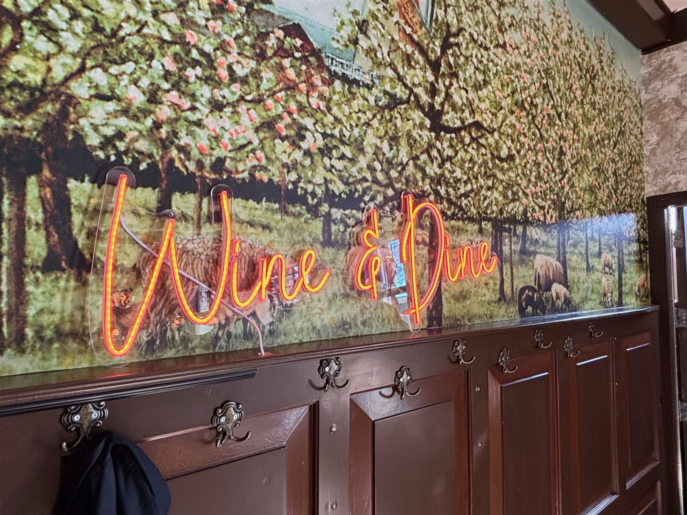
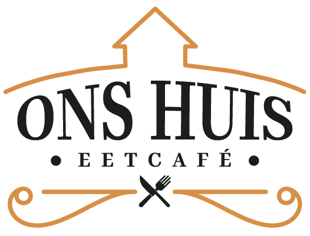
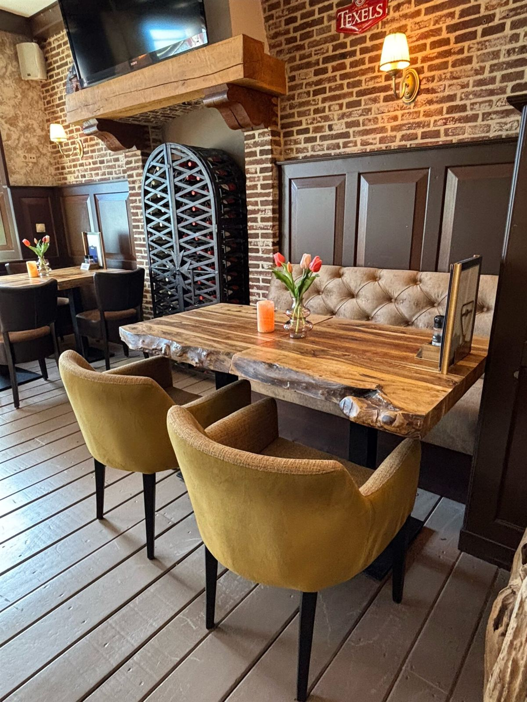
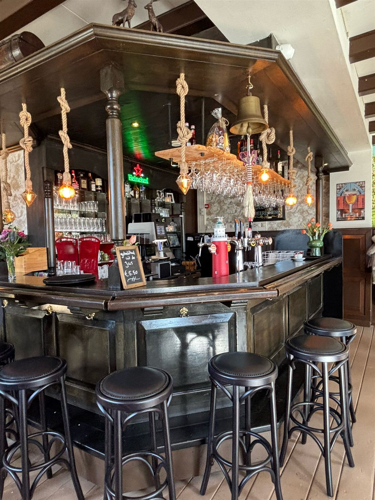
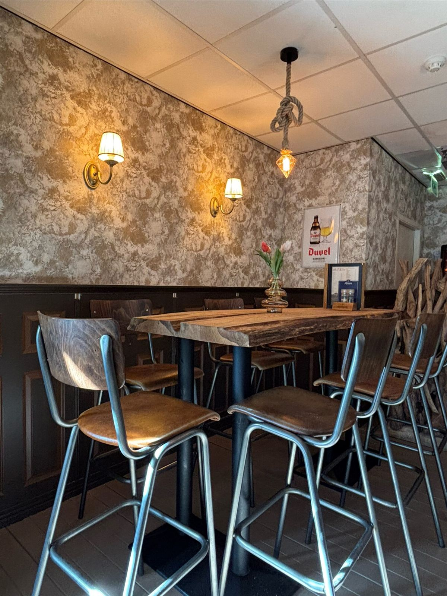
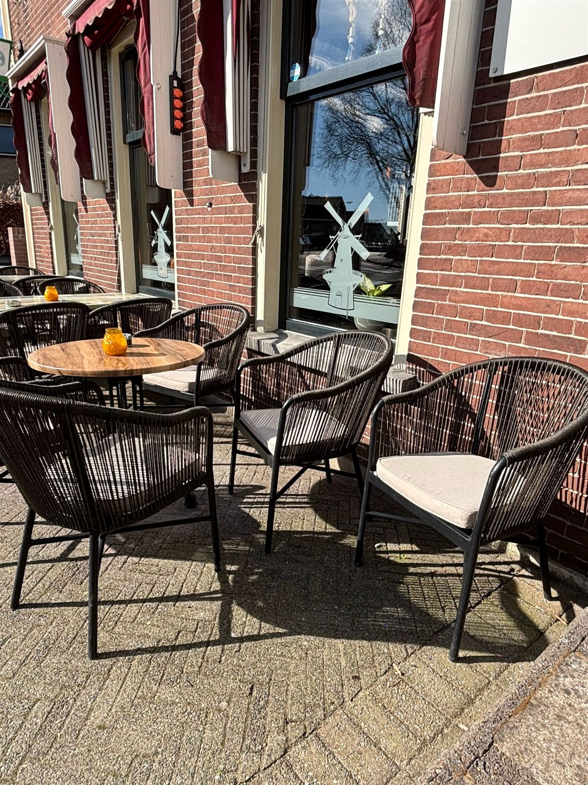
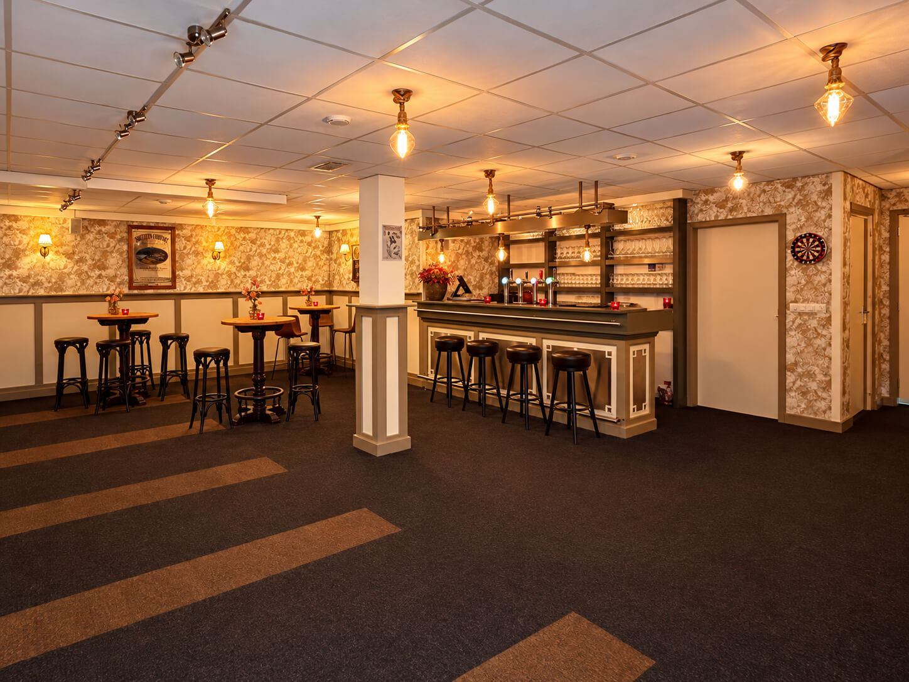
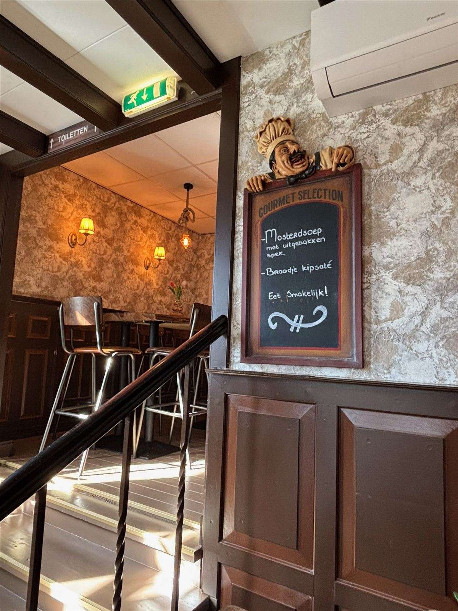

Bij Ons Huis voelt iedereen zich thuis
Het eetcafé in Cothen voor jong en oud. Voor een goede kop koffie, een uitgebreide lunch of gezellig tafelen in de avond.
Zes dagen per week open, dinsdag gesloten
Lunch vanaf 11:00
Diner vanaf 17:00
Keuken sluit om 21:00
Dorpsstraat 53 Cothen
Gezellig eten, drinken én samenkomen
Bij Eetcafé Ons Huis in Cothen draait alles om samen genieten. Of u nu binnenloopt voor een goede kop koffie met iets lekkers, gezellig wilt bijpraten tijdens de lunch, of uitgebreid wilt tafelen in de avond: bij ons voelt het altijd vertrouwd.
Bij ons staat gastvrijheid centraal. Vanaf het moment dat u binnenstapt doen wij er alles aan om u zich welkom en thuis te laten voelen. Schuif aan en proef één van onze vele gerechten, vers bereid met aandacht en passie, en natuurlijk geserveerd met een glimlach.
In een ongedwongen en huiselijke sfeer zorgen wij voor lekker eten, fijne drankjes en persoonlijke aandacht. Wij denken graag met u mee: alles is bespreekbaar.




Gezellig warm in de herfst, aangenaam koel in de zomer
Geniet binnen van onze airco, of blijf warm bij het haardvuur op het terras.
Reserveer een tafelZaalverhuur & feesten
Onze sfeervolle zaal is geschikt voor gezelschappen tot ongeveer 50 personen.
Perfect voor verjaardagen, jubilea, familiefeesten, borrels, vergaderingen, condoleances en andere bijeenkomsten. Tijdens uw bijeenkomst nemen wij alles uit handen: wij verzorgen alle drankjes vanuit ons eetcafé en kunnen in overleg ook hapjes, lunch of een compleet diner aanbieden.
De zaal kan flexibel worden ingericht en heeft een gezellige, ongedwongen sfeer, precies zoals u het wilt. Persoonlijk contact staat bij ons centraal: wij denken graag met u mee om uw feest of bijeenkomst tot in de puntjes te verzorgen.

Gezellig een pijltje gooien
Onder het eetcafé hebben wij een gezellige dartzaal met meerdere dartbanen: een fijne plek voor zowel recreatief als competitief darten. De zaal is ook te gebruiken voor feesten, vergaderingen en andere bijeenkomsten, voor gezelschappen tot ongeveer 50 personen. Alle drankjes verzorgen wij vanuit het eetcafé.
Darthouse Cothen
Op maandagavond is de lokale dartvereniging Darthouse Cothen actief in onze dartzaal. Lijkt het je leuk om eens een pijltje mee te gooien of de sfeer te proeven? Je bent van harte welkom om een kijkje te komen nemen of contact met ons op te nemen. Actuele informatie en evenementen vind je op de Facebookpagina van Darthouse Cothen.
Gemiddeld beoordeeld met een 8
Onze gasten waarderen onze service en kwaliteit.
“Heerlijk gegeten voor een super prijs. Leuke lieve mensen. Hier komen wij zeker terug. Een echte aanrader.”
“Prima geluncht voor een vriendelijke prijs. Vlotte, aardige bediening. Prima stopplek op de fruit- en bloesemwandeling.”
“Gezellige tent om te eten, maar ook voor een feestje. Goeie bediening.”
Boek uw tafel
Reserveer hier snel en makkelijk een tafel.
Let op: in het weekend graag even bellen voor reserveringen, via 0343 - 758 474.

Openingstijden & contact
| Maandag | 12:00 – 22:00 |
|---|---|
| Dinsdag | Gesloten |
| Woensdag | 12:00 – 22:00 |
| Donderdag | 10:00 – 22:00 |
| Vrijdag | 10:00 – 00:00 |
| Zaterdag | 10:00 – 00:00 |
| Zondag | 10:00 – 22:00 |
De keuken sluit om 21:00. Lunch vanaf 11:00, diner vanaf 17:00.
Eetcafé Ons HuisDorpsstraat 53
3945 BK Cothen
0343 - 758 474
info@eetcafeonshuis.nl